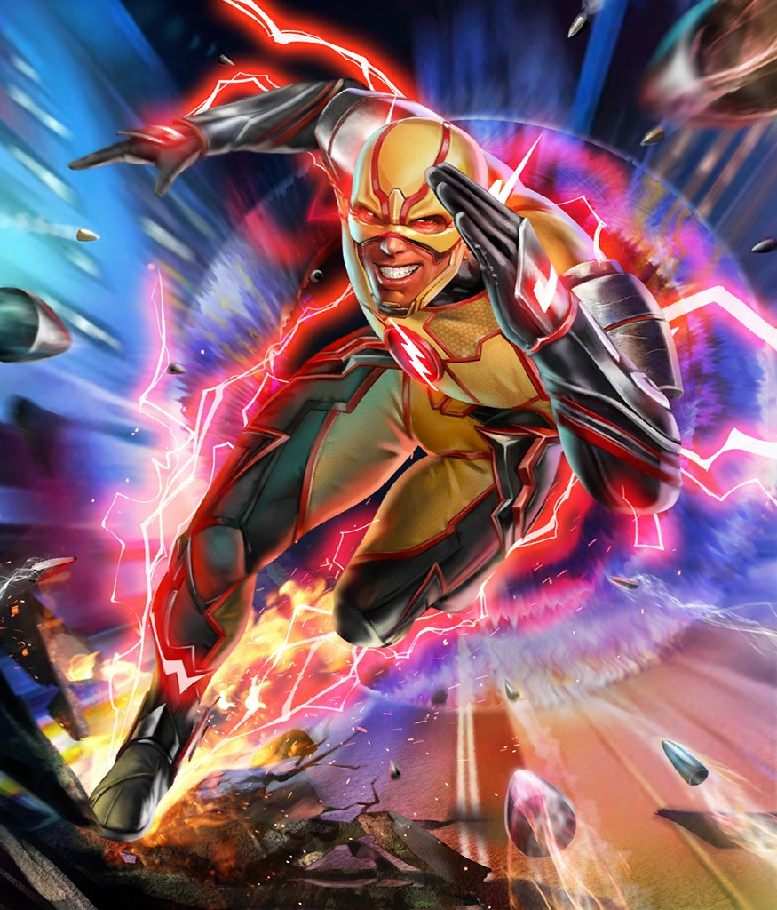

Eobard Thawne, a.k.a. Reverse-Flash/Professor Zoom, has gone through various origins
due to the changing of the timeline, with an extensive background. His most recent origin has been reverted to a previous
one infact. Eobard was born in the 25th century, where his parents genetically engineered him
to be a highly intelligent individual. As he grew up though, he became reclusive and lost in
his own head, which was looked down upon in his time period. Everything during the 25th century
was set as orderly as possible right down to the second, no matter what was scheduled. Eobard's
parents had a second son, Robern, to possibly help Eobard with his lack of social skills and
responsibilities. This inevitably lead to Eobard falling behind in studies helping his little
brother, constantly being reprimanded by their parents. Being sidetracked with Robern also lead
to Eobard being rejected for applying to the Flash Museum in the near future. Eobard attempted breaking
into the Museum to further his studies, but was quickly caught by his little brother, who at the
time became a cop. With this incident, a future version of Eobard traveled to the past to stop
Robern from ever being born, allowing present-day Eobard to continue his studies on Flash and
the Speed Force. Successfully admitted to the Flash Museum now, Eobard wanted to collaborate with
a scientist who could prove the existence of the Speed Force. This scientist refused to collaborate
with Eobard, leading to another instance of a future version of Eobard changing the timeline by
killing this scientist. His future self also lead him to discovering the time capsule containing Barry's
costume to make himself the Flash of the 25th century, setting in motion the events of Eobard being
rejected as The Flash in the 25th century, and time traveling to The Flash's time period, only to
discover that he would become Flash's archnemesis. Through self-fulfilling prophecy in realizing
Eobard would become Flash's archnemesis, he became mad. Given that if Eobard went to the past to
kill Barry or stop his powers from ever happening would cause Eobard to cease being who he is, Eobard
instead caused every misfortune throughout Barry's childhood, even killing Barry's mother.
Abilities
Creator of the Negative Speed Force
- Superhuman speed
- Regenerative abilities
- Dimensional travel
- Memory and speed absorption
- Immortality
- Genius-level intellect